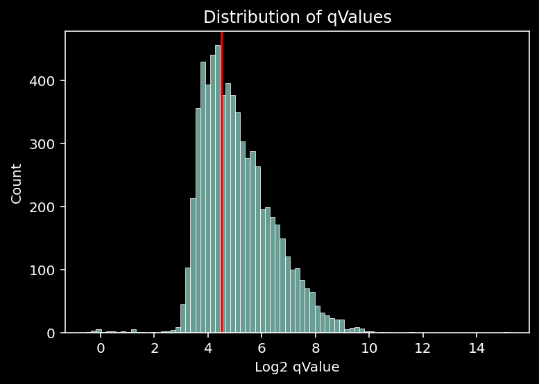
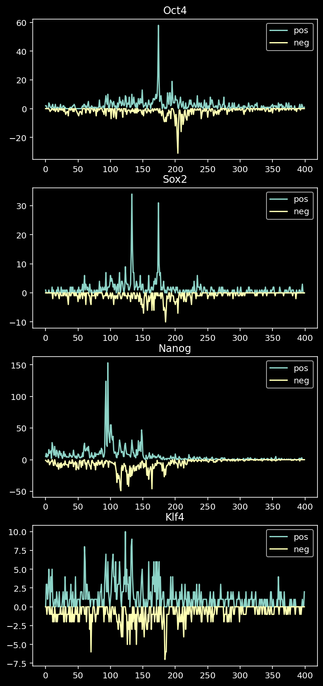
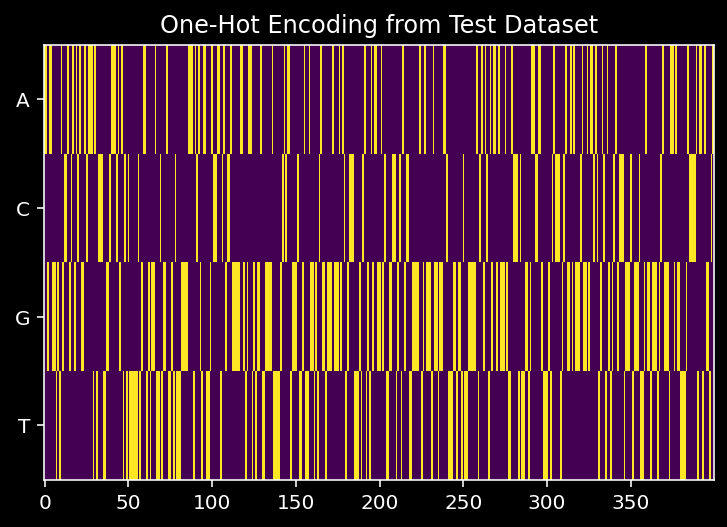
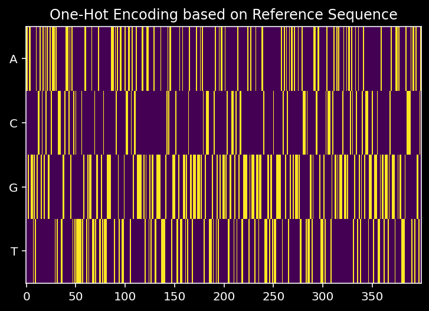

import numpy as np
import matplotlib.pyplot as plt
plt.style.use('dark_background')
import seaborn as sns
import pandas as pd
import re
import torch
from torch.utils.data import Dataset, DataLoader
from src.utils import ChIP_Nexus_Dataset
from src.architectures import BPNet02 Dataset and NN Architecture API
Documentation for our dataset and neural network architecture API.
1 Libraries
2 Dataset API
INPUT_DIR = "/home/philipp/BPNet/input/"2.1 Example 1: Create Train Dataset for all TFs
One has to provide the set which must be one of “train”, “tune”, “test” as well as the input directory and the list of TFs one wants to model.
whole_dataset = ChIP_Nexus_Dataset(set_name="train",
input_dir=INPUT_DIR,
TF_list=['Sox2', 'Oct4', 'Klf4', 'Nanog'])
whole_datasetChIP_Nexus_Dataset
Set: train
TFs: ['Sox2', 'Oct4', 'Klf4', 'Nanog']
Size: 93904Check the shapes via the check_shapes() method.
whole_dataset.check_shapes()self.tf_list=['Sox2', 'Oct4', 'Klf4', 'Nanog']
self.one_hot_seqs.shape=(93904, 4, 1000) [idx, bases, pwidth]
self.tf_counts.shape=(93904, 4, 2, 1000) [idx, TF, strand, pwidth]
self.ctrl_counts.shape=(93904, 2, 1000) [idx, strand, pwidth]
self.ctrl_counts_smooth.shape=(93904, 2, 1000) [idx, strand, pwidth]2.2 Example 2: Create Train Dataset for Sox2
If we only want to take one or a few TFs into consideration we can specify which ones using the TF_list parameter. The constructor method will take care of everything and only keep the peaks that are specific to the TFs in the TF_list.
small_dataset = ChIP_Nexus_Dataset(set_name="train",
input_dir=INPUT_DIR,
TF_list=['Sox2'])
small_datasetChIP_Nexus_Dataset
Set: train
TFs: ['Sox2']
Size: 6748small_dataset.check_shapes()self.tf_list=['Sox2']
self.one_hot_seqs.shape=(6748, 4, 1000) [idx, bases, pwidth]
self.tf_counts.shape=(6748, 1, 2, 1000) [idx, TF, strand, pwidth]
self.ctrl_counts.shape=(6748, 2, 1000) [idx, strand, pwidth]
self.ctrl_counts_smooth.shape=(6748, 2, 1000) [idx, strand, pwidth]2.3 Example 3: Create Train Dataset for Sox2 and High-Confidence Peaks
We might also want to filter peaks based on the qValue.
cutoff = 4.5
sns.histplot(np.log2(small_dataset.region_info.qValue))
plt.xlabel("Log2 qValue")
plt.title("Distribution of qValues")
plt.axvline(cutoff, color="red")
plt.show()
Looking at the histogram of the log2 qValue, we might decide to only keep peaks with a log2 qValue above 4.5.
highconf_dataset = ChIP_Nexus_Dataset(set_name="train",
input_dir=INPUT_DIR,
TF_list=["Sox2"],
qval_thr=2**cutoff)
highconf_datasetChIP_Nexus_Dataset
Set: train
TFs: ['Sox2']
Size: 4182highconf_dataset.check_shapes()self.tf_list=['Sox2']
self.one_hot_seqs.shape=(4182, 4, 1000) [idx, bases, pwidth]
self.tf_counts.shape=(4182, 1, 2, 1000) [idx, TF, strand, pwidth]
self.ctrl_counts.shape=(4182, 2, 1000) [idx, strand, pwidth]
self.ctrl_counts_smooth.shape=(4182, 2, 1000) [idx, strand, pwidth]2.4 Example 4: Create Train Dataset for Sox2 but keep all Regions
Now we might also want to create a training set that contains all the regions but only the counts for Sox2.
sox2_all_regions = ChIP_Nexus_Dataset(set_name="train",
input_dir=INPUT_DIR,
TF_list=["Sox2"],
subset=False)
sox2_all_regionsChIP_Nexus_Dataset
Set: train
TFs: ['Sox2']
Size: 93904sox2_all_regions.check_shapes()self.tf_list=['Sox2']
self.one_hot_seqs.shape=(93904, 4, 1000) [idx, bases, pwidth]
self.tf_counts.shape=(93904, 1, 2, 1000) [idx, TF, strand, pwidth]
self.ctrl_counts.shape=(93904, 2, 1000) [idx, strand, pwidth]
self.ctrl_counts_smooth.shape=(93904, 2, 1000) [idx, strand, pwidth]3 Architecture API
3.1 Example 1: One TF, Shape Prediction, No Bias Track
model_1 = BPNet(n_dil_layers=9, TF_list=["Sox2"], pred_total=False, bias_track=False)
model_1BPNet(
(base_model): ConvLayers(
(conv_layers): ModuleList(
(0): Conv1d(4, 64, kernel_size=(25,), stride=(1,), padding=same)
(1): Conv1d(64, 64, kernel_size=(3,), stride=(1,), padding=same, dilation=(2,))
(2): Conv1d(64, 64, kernel_size=(3,), stride=(1,), padding=same, dilation=(4,))
(3): Conv1d(64, 64, kernel_size=(3,), stride=(1,), padding=same, dilation=(8,))
(4): Conv1d(64, 64, kernel_size=(3,), stride=(1,), padding=same, dilation=(16,))
(5): Conv1d(64, 64, kernel_size=(3,), stride=(1,), padding=same, dilation=(32,))
(6): Conv1d(64, 64, kernel_size=(3,), stride=(1,), padding=same, dilation=(64,))
(7): Conv1d(64, 64, kernel_size=(3,), stride=(1,), padding=same, dilation=(128,))
(8): Conv1d(64, 64, kernel_size=(3,), stride=(1,), padding=same, dilation=(256,))
(9): Conv1d(64, 64, kernel_size=(3,), stride=(1,), padding=same, dilation=(512,))
)
)
(profile_heads): ModuleList(
(0): ProfileShapeHead(
(deconv): ConvTranspose1d(64, 2, kernel_size=(25,), stride=(1,), padding=(12,))
)
)
)3.2 Example 2: One TF, Shape & Total Counts Prediction, No Bias Track
model_2 = BPNet(n_dil_layers=9, TF_list=["Sox2"], pred_total=True, bias_track=False)
model_2BPNet(
(base_model): ConvLayers(
(conv_layers): ModuleList(
(0): Conv1d(4, 64, kernel_size=(25,), stride=(1,), padding=same)
(1): Conv1d(64, 64, kernel_size=(3,), stride=(1,), padding=same, dilation=(2,))
(2): Conv1d(64, 64, kernel_size=(3,), stride=(1,), padding=same, dilation=(4,))
(3): Conv1d(64, 64, kernel_size=(3,), stride=(1,), padding=same, dilation=(8,))
(4): Conv1d(64, 64, kernel_size=(3,), stride=(1,), padding=same, dilation=(16,))
(5): Conv1d(64, 64, kernel_size=(3,), stride=(1,), padding=same, dilation=(32,))
(6): Conv1d(64, 64, kernel_size=(3,), stride=(1,), padding=same, dilation=(64,))
(7): Conv1d(64, 64, kernel_size=(3,), stride=(1,), padding=same, dilation=(128,))
(8): Conv1d(64, 64, kernel_size=(3,), stride=(1,), padding=same, dilation=(256,))
(9): Conv1d(64, 64, kernel_size=(3,), stride=(1,), padding=same, dilation=(512,))
)
)
(profile_heads): ModuleList(
(0): ProfileShapeHead(
(deconv): ConvTranspose1d(64, 2, kernel_size=(25,), stride=(1,), padding=(12,))
)
)
(count_heads): ModuleList(
(0): TotalCountHead(
(fc1): Linear(in_features=64, out_features=32, bias=True)
(fc2): Linear(in_features=32, out_features=2, bias=True)
)
)
)3.3 Example 3: One TF, Shape & Total Counts Prediction, Bias
model_3 = BPNet(n_dil_layers=9, TF_list=["Sox2"], pred_total=True, bias_track=True)
model_3BPNet(
(base_model): ConvLayers(
(conv_layers): ModuleList(
(0): Conv1d(4, 64, kernel_size=(25,), stride=(1,), padding=same)
(1): Conv1d(64, 64, kernel_size=(3,), stride=(1,), padding=same, dilation=(2,))
(2): Conv1d(64, 64, kernel_size=(3,), stride=(1,), padding=same, dilation=(4,))
(3): Conv1d(64, 64, kernel_size=(3,), stride=(1,), padding=same, dilation=(8,))
(4): Conv1d(64, 64, kernel_size=(3,), stride=(1,), padding=same, dilation=(16,))
(5): Conv1d(64, 64, kernel_size=(3,), stride=(1,), padding=same, dilation=(32,))
(6): Conv1d(64, 64, kernel_size=(3,), stride=(1,), padding=same, dilation=(64,))
(7): Conv1d(64, 64, kernel_size=(3,), stride=(1,), padding=same, dilation=(128,))
(8): Conv1d(64, 64, kernel_size=(3,), stride=(1,), padding=same, dilation=(256,))
(9): Conv1d(64, 64, kernel_size=(3,), stride=(1,), padding=same, dilation=(512,))
)
)
(profile_heads): ModuleList(
(0): ProfileShapeHead(
(deconv): ConvTranspose1d(64, 2, kernel_size=(25,), stride=(1,), padding=(12,))
)
)
(count_heads): ModuleList(
(0): TotalCountHead(
(fc1): Linear(in_features=64, out_features=32, bias=True)
(fc2): Linear(in_features=32, out_features=2, bias=True)
)
)
)Features bias weights.
model_3.profile_heads[0].bias_weightsParameter containing:
tensor([0.0100, 0.0100], requires_grad=True)3.4 Example 4: All TFs, Shape & Total Counts Prediction, Bias
model_4 = BPNet(n_dil_layers=9, TF_list=["Sox2", "Oct4", "Nanog", "Klf4"], pred_total=True, bias_track=True)
model_4BPNet(
(base_model): ConvLayers(
(conv_layers): ModuleList(
(0): Conv1d(4, 64, kernel_size=(25,), stride=(1,), padding=same)
(1): Conv1d(64, 64, kernel_size=(3,), stride=(1,), padding=same, dilation=(2,))
(2): Conv1d(64, 64, kernel_size=(3,), stride=(1,), padding=same, dilation=(4,))
(3): Conv1d(64, 64, kernel_size=(3,), stride=(1,), padding=same, dilation=(8,))
(4): Conv1d(64, 64, kernel_size=(3,), stride=(1,), padding=same, dilation=(16,))
(5): Conv1d(64, 64, kernel_size=(3,), stride=(1,), padding=same, dilation=(32,))
(6): Conv1d(64, 64, kernel_size=(3,), stride=(1,), padding=same, dilation=(64,))
(7): Conv1d(64, 64, kernel_size=(3,), stride=(1,), padding=same, dilation=(128,))
(8): Conv1d(64, 64, kernel_size=(3,), stride=(1,), padding=same, dilation=(256,))
(9): Conv1d(64, 64, kernel_size=(3,), stride=(1,), padding=same, dilation=(512,))
)
)
(profile_heads): ModuleList(
(0): ProfileShapeHead(
(deconv): ConvTranspose1d(64, 2, kernel_size=(25,), stride=(1,), padding=(12,))
)
(1): ProfileShapeHead(
(deconv): ConvTranspose1d(64, 2, kernel_size=(25,), stride=(1,), padding=(12,))
)
(2): ProfileShapeHead(
(deconv): ConvTranspose1d(64, 2, kernel_size=(25,), stride=(1,), padding=(12,))
)
(3): ProfileShapeHead(
(deconv): ConvTranspose1d(64, 2, kernel_size=(25,), stride=(1,), padding=(12,))
)
)
(count_heads): ModuleList(
(0): TotalCountHead(
(fc1): Linear(in_features=64, out_features=32, bias=True)
(fc2): Linear(in_features=32, out_features=2, bias=True)
)
(1): TotalCountHead(
(fc1): Linear(in_features=64, out_features=32, bias=True)
(fc2): Linear(in_features=32, out_features=2, bias=True)
)
(2): TotalCountHead(
(fc1): Linear(in_features=64, out_features=32, bias=True)
(fc2): Linear(in_features=32, out_features=2, bias=True)
)
(3): TotalCountHead(
(fc1): Linear(in_features=64, out_features=32, bias=True)
(fc2): Linear(in_features=32, out_features=2, bias=True)
)
)
)4 Appendix
4.1 Recreate Figure 1 e
test_dataset = ChIP_Nexus_Dataset(set_name="test",
input_dir=INPUT_DIR,
TF_list=['Oct4', 'Sox2', 'Nanog', 'Klf4'])
test_datasetChIP_Nexus_Dataset
Set: test
TFs: ['Oct4', 'Sox2', 'Nanog', 'Klf4']
Size: 27727tmp_df = test_dataset.region_info.copy().reset_index()
idx = tmp_df.loc[(tmp_df.seqnames=="chr1") & (tmp_df.start > 180924752-1000) & (tmp_df.end < 180925152+1000)].index.to_numpy()[0]
diff = 180924752 - tmp_df.start[idx] + 1
w = 400
fig, axis = plt.subplots(4, 1, figsize=(6, 14))
for ax, (i, tf) in zip(axis, enumerate(test_dataset.tf_list)):
ax.plot(test_dataset.tf_counts[idx, i, 0, diff:(diff+w)], label="pos")
ax.plot(-test_dataset.tf_counts[idx, i, 1, diff:(diff+w)], label="neg")
ax.legend()
ax.set_title(tf)
plt.show()
4.2 Check One-Hot Encoding
To check whether the one-hot encoding worked as expected, we compare here:
- The one-hot encoded sequence as stored in the test dataset
plt.imshow(test_dataset.one_hot_seqs[idx, :, diff:(diff+w)], interpolation="none", aspect="auto")
plt.title("One-Hot Encoding from Test Dataset")
plt.yticks([0, 1, 2, 3], labels=["A", "C", "G", "T"])
plt.show()
- The one-hot encoded sequence obtained from reading in the mm10 genome and one-hot encoding corresponding sequence
from Bio.Seq import Seq
from Bio import SeqIO
mm10_ref = SeqIO.to_dict(SeqIO.parse(f"../ref/mm10.fa", "fasta"))
seq = mm10_ref[tmp_df.iloc[idx]["seqnames"]][180924752:180925152]
one_hot_seq = np.zeros((4, 400))
for i, letter in enumerate(np.array(seq.seq)):
if letter=="A": one_hot_seq[0, i] = 1
if letter=="C": one_hot_seq[1, i] = 1
if letter=="G": one_hot_seq[2, i] = 1
if letter=="T": one_hot_seq[3, i] = 1
plt.imshow(one_hot_seq, interpolation="none", aspect="auto")
plt.yticks([0, 1, 2, 3], labels=["A", "C", "G", "T"])
plt.title("One-Hot Encoding based on Reference Sequence")
plt.show()
for the peak seen in Figure 1e
np.all(test_dataset.one_hot_seqs[idx, :, diff:(diff+w)] == one_hot_seq)TrueAnd we see that we get exactly the same.